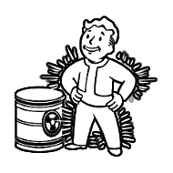

Ekolog¶
{kind=link}
Marian nie lubi toksycznego środowiska, dlatego dla każdego projektu tworzy wirtualne środowisko. Żeby mieć przyjazne i czyste zależności, w końcu “u Niego działa”.
Rola: Venv¶
roles/
projects/
tasks/
main.yml
check_and_install.yml
Tasks¶
---
- name: check and install req
include: check_and_install.yml
with_items: '{{ projects }}'
---
- name: set project dir
set_fact:
project_dir: '{{ home_path }}/projects/{{ item.split("/")[-1] }}'
- name: 'name check if req exists in {{ project_dir }}'
stat:
path: '{{ project_dir}}/requirements.txt'
register: req
- name: 'create virtualenv'
shell: 'sudo python3.6 -m venv {{ project_dir }}/venv'
when: req.stat.exists == True
- name: 'install {{ project_dir }}/requirements.txt'
pip:
requirements: '{{ project_dir }}/requirements.txt'
virtualenv: '{{ project_dir }}/venv'
when: req.stat.exists == True
Output¶
$ ansible-playbook playbooks/venv.yml
PLAY [create projects venv] **************************************************************************************************************************
TASK [Gathering Facts] *******************************************************************************************************************************
ok: [localhost]
TASK [venv : check and install req] ******************************************************************************************************************
included: /home/kepok/projekty/workplace/playbooks/roles/venv/tasks/check_and_install.yml for localhost
included: /home/kepok/projekty/workplace/playbooks/roles/venv/tasks/check_and_install.yml for localhost
TASK [venv : set project dir] ************************************************************************************************************************
ok: [localhost]
TASK [venv : name check if req exists in /home/kepok/projects/workplace] *****************************************************************************
ok: [localhost]
TASK [venv : create virtualenv] **********************************************************************************************************************
skipping: [localhost]
TASK [venv : install /home/kepok/projects/workplace/requirements.txt] ********************************************************************************
skipping: [localhost]
TASK [venv : set project dir] ************************************************************************************************************************
ok: [localhost]
TASK [venv : name check if req exists in /home/kepok/projects/SimpleMonitoring] **********************************************************************
ok: [localhost]
TASK [venv : create virtualenv] **********************************************************************************************************************
changed: [localhost]
TASK [venv : install /home/kepok/projects/SimpleMonitoring/requirements.txt] *************************************************************************
changed: [localhost]
PLAY RECAP *******************************************************************************************************************************************
localhost : ok=9 changed=2 unreachable=0 failed=0
Note
Include pozwala na użycie taksów lub playbooków wewnątrz innego tasku include